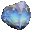
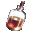
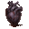
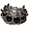

Ингредиенты последовательности 5
28 ингредиентов. Шанс — за одну попытку, убийство, блок или сундук. «Главный» — ингредиент в центральном слоте котла.
Астрономические, географические и фольклорные знания трёх галактик
 Астрономические, географические и фольклорные знания трёх галактик. Нужен в зельях: Тьма 5.
Астрономические, географические и фольклорные знания трёх галактик. Нужен в зельях: Тьма 5.
- Существо мода. Кролик знаний (водится: Мир духов) — 19 % за убийство.
Глаза шестикрылой горгульи
 Глаза шестикрылой горгульи. Нужен в зельях: Мать 5, Шут 5.
Глаза шестикрылой горгульи. Нужен в зельях: Мать 5, Шут 5.
- Крафт. Верстак.
- Существо мода. Каменный голем (водится: весь верхний мир) — 4,8 % за убийство.
Голосовой мешок сирены
 Голосовой мешок сирены. Нужен в зельях: Тиран 5 — главный, Тиран 3.
Голосовой мешок сирены. Нужен в зельях: Тиран 5 — главный, Тиран 3.
- Существо мода. Мурлок (водится: океаны) — 3,7 % за убийство.
Грибной саван Богохульного жреца
 Грибной саван Богохульного жреца. Нужен в зельях: Ошибка 3, Колесо Фортуны 5.
Грибной саван Богохульного жреца. Нужен в зельях: Ошибка 3, Колесо Фортуны 5.
- Блок. Блок красного гриба, Блок коричневого гриба (ножницами; в биоме: Тёмный лес; только природный блок) — 0,8 % за блок.
- Сундук. Постройки Мира духов — 7,9 %.
- Существо мода. Безголовая невеста (водится: Мир духов) — 2,9 % за убийство.
Демонический червь Сискун
 Демонический червь Сискун. Нужен в зельях: Дверь 5 — главный.
Демонический червь Сискун. Нужен в зельях: Дверь 5 — главный.
- Блок. Заражённые каменные кирпичи, Заражённые замшелые каменные кирпичи, Заражённые потрескавшиеся каменные кирпичи, Заражённые резные каменные кирпичи (в структуре «Крепость») — 15 % за блок.
- Сундук. Постройки Мира духов — 15 %.
- Существо мода. Злоуст (водится: Мир духов; приходит и Ночью Мира духов) — 9,9 % за убийство.
Заточённая душа
 Заточённая душа. Нужен в зельях: Ошибка 4, Колесо Фортуны 5.
Заточённая душа. Нужен в зельях: Ошибка 4, Колесо Фортуны 5.
- Добыча. Визер-скелет (во второй руке пустая бутылка, она тратится) — 12 % за убийство игроком.
- Сундук. Постройки Мира духов — 15 %.
- Существо мода. Призрак (водится: Мир духов, Подземный мир; приходит и Ночью Мира духов) — 7,3 % за убийство.
Звёздная карта, начертанная кровью духа
 Звёздная карта, начертанная кровью духа. Нужен в зельях: Смерть 1, Дверь 5.
Звёздная карта, начертанная кровью духа. Нужен в зельях: Смерть 1, Дверь 5.
- Крафт. Верстак.
- Сундук. Постройки Мира духов — 15 %.
- Существо мода. Демон знания (водится: Мир духов, океаны; приходит и Ночью Мира духов) — 0,95 % за убийство.
Источник безумных снов
 Источник безумных снов. Нужен в зельях: Тьма 5 — главный.
Источник безумных снов. Нужен в зельях: Тьма 5 — главный.
- Крафт. Верстак.
- Существо мода. Демон знания (водится: Мир духов, океаны; приходит и Ночью Мира духов) — 14 % за убийство.
Кора драконова дерева
 Кора драконова дерева. Нужен в зельях: Мать 5, Шут 5.
Кора драконова дерева. Нужен в зельях: Мать 5, Шут 5.
- Топор. Ободрать: Бревно джунглевого дерева, Древесина джунглевого дерева — 10 % за бревно.
Кристалл иллюзий разума

- Крафт. Верстак.
- Сундук. Постройки Мира духов — 9,5 %.
- Существо мода. Демон знания (водится: Мир духов, океаны; приходит и Ночью Мира духов) — 0,95 % за убийство.
Кристаллизованная кровь кальмара Лавоса
 Кристаллизованная кровь кальмара Лавоса. Нужен в зельях: Тиран 5.
Кристаллизованная кровь кальмара Лавоса. Нужен в зельях: Тиран 5.
- Существо мода. Мурлок (водится: океаны) — 9,2 % за убийство.
Кристаллическое ядро тысячерукого призрака
 Кристаллическое ядро тысячерукого призрака. Нужен в зельях: Смерть 5 — главный.
Кристаллическое ядро тысячерукого призрака. Нужен в зельях: Смерть 5 — главный.
- Крафт. Верстак.
- Существо мода. Призрак (водится: Мир духов, Подземный мир; приходит и Ночью Мира духов) — 11 % за убийство.
Кровь Болотного великана
 Кровь Болотного великана. Нужен в зельях: Ошибка 3, Колесо Фортуны 5.
Кровь Болотного великана. Нужен в зельях: Ошибка 3, Колесо Фортуны 5.
- Пустая бутылка. Ведьма — 25 % за попытку, бутылка остывает 5 с.
- Сундук. Постройки Мира духов — 11 %.
- Существо мода. Гнойная рука (водится: Мир духов) — 5,7 % за убийство.
Кровь Дракона разума (взрослого)

- Пустая бутылка. Нюхач (взрослое) — 30 % за попытку, бутылка остывает 30 с.
- Существо мода. Демон знания (водится: Мир духов, океаны; приходит и Ночью Мира духов) — 9,3 % за убийство.
Кровь Петуха рассвета
 Кровь Петуха рассвета. Нужен в зельях: Бездна 5.
Кровь Петуха рассвета. Нужен в зельях: Бездна 5.
- Существо мода. Дервиш (водится: Мир духов; приходит и Ночью Мира духов) — 12 % за убийство.
Любимые еда или питьё
 Любимые еда или питьё. Нужен в зельях: Дверь 1, Тьма 5.
Любимые еда или питьё. Нужен в зельях: Дверь 1, Тьма 5.
- Подарок. Подарок жителей Герою деревни — 25 %.
- Сундук. Постройки Мира духов — 11 %.
Остаточная духовность древних призраков
 Остаточная духовность древних призраков. Нужен в зельях: Мать 5, Шут 5.
Остаточная духовность древних призраков. Нужен в зельях: Мать 5, Шут 5.
- Крафт. Верстак.
- Существо мода. Призрак (водится: Мир духов, Подземный мир; приходит и Ночью Мира духов) — 11 % за убийство.
Порошок мелиссы
 Порошок мелиссы. Нужен в зельях: Смерть 1, Дверь 5.
Порошок мелиссы. Нужен в зельях: Смерть 1, Дверь 5.
- Сундук. Библиотека крепости — 30 %.
- Сундук. Темница — 12 %.
Порошок останков пойманного призрака
 Порошок останков пойманного призрака. Нужен в зельях: Смерть 1, Дверь 5.
Порошок останков пойманного призрака. Нужен в зельях: Смерть 1, Дверь 5.
- Добыча. Скелет (в биоме: Долина песка душ) — 2 % за убийство игроком.
- Сундук. Постройки Мира духов — 15 %.
- Существо мода. Призрак (водится: Мир духов, Подземный мир; приходит и Ночью Мира духов) — 0,74 % за убийство.
Прах древних призраков
 Прах древних призраков. Нужен в зельях: Шут 5 — главный.
Прах древних призраков. Нужен в зельях: Шут 5 — главный.
- Крафт. Верстак.
- Существо мода. Призрак (водится: Мир духов, Подземный мир; приходит и Ночью Мира духов) — 11 % за убийство.
Розмарин
 Розмарин. Нужен в зельях: Солнце 5.
Розмарин. Нужен в зельях: Солнце 5.
- Блок. Папоротник, Раскидистый папоротник (в биоме: тайга) — 6 % за блок.
Сердце Крысы-пожирательницы снов

- Добыча. Чешуйница — 4 % за убийство игроком.
- Существо мода. Демон знания (водится: Мир духов, океаны; приходит и Ночью Мира духов) — 14 % за убийство.
Сердце ловца снов
Сердце ловца снов. Нужен в зельях: Зритель 3, Зритель 5 — главный.
- Крафт. Верстак.
- Существо мода. Демон знания (водится: Мир духов, океаны; приходит и Ночью Мира духов) — 5,6 % за убийство.
Сердце синепятнистой огненной птицы
 Сердце синепятнистой огненной птицы. Нужен в зельях: Колесо Фортуны 5 — главный.
Сердце синепятнистой огненной птицы. Нужен в зельях: Колесо Фортуны 5 — главный.
- Существо мода. Дервиш (водится: Мир духов; приходит и Ночью Мира духов) — 12 % за убийство.
Сок пальчатого цитрона
 Сок пальчатого цитрона. Нужен в зельях: Бездна 3, Солнце 5.
Сок пальчатого цитрона. Нужен в зельях: Бездна 3, Солнце 5.
- Крафт. Верстак.
- Существо мода. Гнойная рука (водится: Мир духов) — 5,7 % за убийство.
Фасеточные глаза чёрного паука-охотника

- Крафт. Верстак.
- Существо мода. Злоуст (водится: Мир духов; приходит и Ночью Мира духов) — 9,9 % за убийство.
Чистый белый сияющий камень
 Чистый белый сияющий камень. Нужен в зельях: Солнце 5 — главный.
Чистый белый сияющий камень. Нужен в зельях: Солнце 5 — главный.
- Крафт. Верстак.
- Сундук. Постройки Мира духов — 10 %.
- Существо мода. Каменный голем (водится: весь верхний мир) — 4,8 % за убийство.
Шёлковая железа чёрной вдовы
 Шёлковая железа чёрной вдовы. Нужен в зельях: Демонесса 5 — главный.
Шёлковая железа чёрной вдовы. Нужен в зельях: Демонесса 5 — главный.
- Добыча. Пещерный паук (в заброшенной шахте) — 5 % за убийство игроком.
- Существо мода. Безголовая невеста (водится: Мир духов) — 7,2 % за убийство.